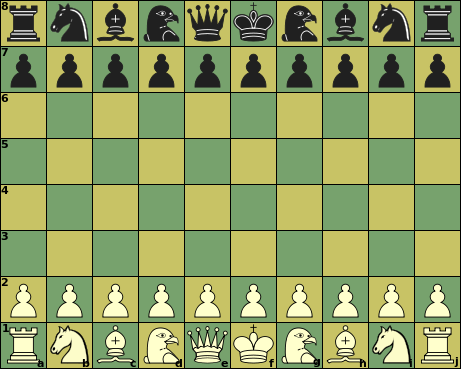

|  |
Initial setupf1, f8: King |
| Piece | ID | value | Moves (Betza notation) | Remarks |
| King | K | - | K | Can castle with Rook, moving 3 or 4 steps to b- or i-file |
| Queen | Q | 9.5 | RB or Q | |
| Falcon | F | ~5 | nLnJ | Can reach its 16 destination through 3 paths each |
| Rook | R | 5 | R | |
| Bishop | B | 3.5 | B | Color-bound |
| Knight | N | 3 | N | |
| Pawn | P | 1 | mfWcfF | Promotes to Q, F, R, B, or N on reaching last rank |
A King that has not moved before can move three steps in the direction of a Rook that has not moved before, in which case that Rook is moved to the square next to the King on the other side. This is only allowed if all squares between King and Rook are empty, when the King is not in check on the square it came from, and would not be in check on any of the squares it skipped over.
The Falcon is a so-called multi-path piece. It complements the moves of all orthodox pieces, in the sense that it can reaches all squares reachable by King could reach in 3 moves that cannot be reached by R, B or N in a single move. A King would always need three steps to reach the Falcon destinations, (one diagonal and two straight, or two diagonal and one straight), but it can always do so in three ways, depending on the order of the straight and diagonal steps. The Falcon must follow the path a King could have followed, and if all the three paths are blocked, the Falcon cannot move to that destination.
The Falcon pieces are extra, and the board is expanded to accomodate them. To handle the larger board width, the King moves 3 squares on castling.
It is not possible to force checkmate on a bare King with just a single Bishop or Knight (in addition to your own King). King + Falcon can force mate on a bare King.
Bishops are confined to squares of a single color. Having Bishops on both colors compensates this weakness, and is worth an extra 0.5 on top of their added value.